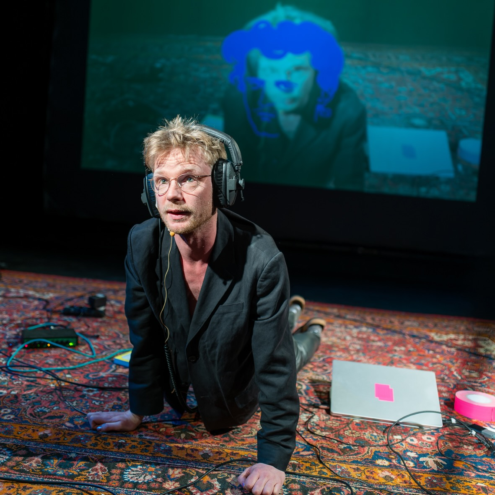

Photo Stephen Vincke / Fabrique du Théâtre
WIELS, Brussels, 05.10.2024
Read English translation Lire en français
Ça fait quinze ans que je connais Isodore.
It's been 15 years since I've known Isodore.
Je parlais déjà un peu français à l’époque.
Le français des vacances
et par àprès, au lycée on considérait aussi que
c’était une bonne idée
que les gens apprennent cette langue.
I already spoke a little French at the time.
Holiday French
and also at high school
it was considered a good idea
for people to learn this language.
Un magnifique jeune homme au visage d'ange,
au regard acéré et puissant.
A magnificent young man, with an angelic face,
and a sharp, steely gaze.
J'écoute un enregistrement
que j'ai fait à l’époque
J'essaie d'expliquer comment tout fonctionne.
Encore et encore.
On dirait que je ne vais pas très bien
Ou du moins, je ne suis pas capable de donner
cette impression.
C’est peut-être la même chose.
I listened to the recording
I made at the time
I tried to explain how everything works
again and again.
It seemed like I wasn’t doing very well
at least I wasn’t able to give that impression.
It might be the same thing.
Moi, je vivais sous les toits.
Je m’étais déclaré directeur artistique de l’internet
I was living in an attic,
I had declared myself art director of the Internet.
Le site s’appelait Gallica
J’ai crée un compte.
je me disais voilà les gaulllois,
dans ma région c’était plutôt les bataves,
je me suis appelé Batavia.
The site was called Gallica.
I created an account.
I said to myself, there are the Gauls,
in my region, it was the Batavi,
so I called myself Batavia.
Isodore,
C’est lui qui m’est sauté aux jeux.
Parmi tous ces autres,
soulignant leur masculinité avec des barbes et des moustaches imposantes.
Lui qu’une petite moustache naissante.
Ses pairs semblent fixés à l’époque du daguerrotype,
mais lui hors du temps.
À peine vingt ans, on dirait
Léo dans les années 90.
Timothé dans les années 10.
Isodore,
he is the one who caught my eye
amongst all those others,
their masculinity imposed through beards and moustaches.
Whereas the fuzz on his upper lips was spotty.
His peers seemed to be fixed at the time of the daguerrotype,
but he, out of time.
Barely twenty years old, he was
Leo, in the 90s,
Timothé, in the 10s.
J’ai vue son portrait
Félix ne l’a jamais rencontré.
C’est un portrait imaginé.
Les aplats noirs—ça pourrait autant être des courbes vectorielles d’aujourd’hui
qu’une gravure en bois.
I saw his portrait
while Félix never met him.
It’s an imaginary portrait.
The areas of solid black colour could be today’s vector curves
or stems from a woodcut.
Je me souviens aussi de cette case à cocher.
Ça m’a embêté.
I also remember this checkbox,
it got me angry.
Cette case à cocher
La jurisprudence de la Cour de justice de l’Union européenne,
dans l’arrêt du 15 janvier 2015, Ryanair/PR Aviation BV (C-30/14, EU:C:2015:10),
indique qu’un tel consentement
est juridiquement valable :
c’est comme signer un contrat.
This checkbox
The jurisprudence of the EU court of justice,
in the arrest of January 15, 2015, Ryanair/PR Aviation BV\N(C-30/14, EU:C:2015:10),
indicates it is legally binding:
It is like signing a contract.
Le langage est un jeu.
Que j’ai joué jusqu'au bout.
Dans le train, je l'explique une fois de plus.
J'en ai fini avec ça, les mots.
Je continue pourtant à dire des choses.
Je bredouille.
Je parle à moi-même
et j'enregistre.
et j'enregistre.
Language is a game
that I played until the very end.
In the train, I explain it once more,
I’m done with words.
I continue to say things.
I speak at random,
I speak to myself,
and I record,
I record.
On dit sur lui, il écrit que la nuit,
assis à son piano. Il déclame,
il forge ses phrases,
plaquant ses prosopopées avec des accords.
Ce magnifique jeune homme au visage d'ange,
au regard acéré et puissant.
It’s said he only writes at night,
behind the piano. He declaims,
crafts his sentences,
setting his prosopopoeias to chords.
This magnificent young man, with an angelic face,
and a sharp, steely gaze.
Isidore lui, il se trouve rez-de-jardin,
il faut une réservation,
et il faut accès.
Pour avoir accès, il faut les diplômes,
Sinon il faut un entretien personnalisé
Isodore, he finds himself garden level.
One needs a reservation,
one needs access
and to have access, one needs a degree,
or an in-person interview
Isodore lui, il a fait publier un ouvrage de poésies
chez M. Lacroix (B. Montmartre, 15).
Mais, une fois qu’il fut imprimé,
L’éditeur a refusé de le faire paraître,
parce que la vie y était peinte sous des couleurs trop amères,
et qu’il craignait le procureur-général.
Isodore, he had a poetry book published
with Mr. Lacroix, Boulevard Montmartre 15.
Yet, once printed, the publisher refused it,
for life was painted with tones too bitter,
and he feared the prosecutor.
Le case à cocher indique qu’on renie.
La réutilisation artistique,
même à petite échelle,
est une utilisation commerciale.
The checkbox indicates waiving rights.
Artistic re-use,
even small-scale,
is commercial use.
Le case à cocher s’est entreposé
entre Isodore et moi
tout comme mon manque de diplômes
The checkbox stands between
Isodore and me,
just like my lack of degrees
On dit qu’il est mort,
Mais on a retiré le plaque commémoratif du cour de l’immeuble
They say he is dead,
but the commemorative plaque was removed from the courtyard
Moi je crois à lui
Ça ne me fait pas peur, son regard
Je le fixe avec le mien
Et je lui parle
Rien à voir avec l’enregistreur
Me, I believe in him
it doesn’t scare me,
His gaze, I fix it with mine
and I talk to him
the recorder can’t compare
C'est comme ça que ça devrait être,
les mots servent de décor à autre chose
qui essaie de s’en débarrasser.
It’s like this that it should be,
the words set the stage for something else
which then tries to leave them behind.
Les français et les françaises n’ont pas bougé entre temps
Meanwhile, the French did not budge
Les réseaux s’accèdent par des objets sûr-designés
Des plaques de verre et d'acier soigneusement façonnés
Qui cachent une immense superstructure, complexe et laide
de satellites et de câbles sous-marins
The network is accessed by over-designed objects:
plates of glass and steel,
carefully shaped,
which hide a huge superstructure,
complex and ugly,
of satellites and undersea cables.
Ce n’est pas à deux que l’amour se crée
Il y a un tas de petits gestes
Sentimentales et logistiques
De ceux et celles qui nous entourent
Et leurs jugements tacites ou ouvertes
Qui permettent d’assumer le désir
Love depends on not just two people,
there are all these little gestures,
sentimental or logistic, of those around us
and their judgments, tacit or aloud
that allow us to assume the desire.
Ma vie a été marqué par des internautes anonymes
Je ne sais ni le nom ni rien de la personne
Qui m’a permis de rencontrer Isodore
pour de vrai cette fois
My life has been shaped by anonymous netizens
I don’t know the name or anything
of the person who allowed me to meet Isodore,
for real this time
Un environnement numérique
est une projection abstraite soutenue
et maintenue par sa capacité à propager l'illusion
d'un comportement immatériel :
une identification sans ambiguïté,
une transmission sans perte,
une répétition sans originalité.
A digital environment is an abstract projection
to propagate the illusion of immaterial behaviour:
identification without ambiguity,
transmission without loss,
repetition without originality.
Quand on s’est revus,
Il n’y avait plus de cases à cocher,
Ni des conditions générales.
Pas d’avertissements GDPR.
Muets pour une fois,
Je savais que c’était parti.
When we saw each other again,
There were no more checkboxes,
no more terms an conditions,
no GDPR warnings.
Silent for once,
I knew this was it.
C’est dans ses yeux que je vois la vie et la mort aussi
Et pourtant je sais que ça ne va pas être simple
C’est un amour médiatisé par les photons sur les écrans
Et les plaques d’impression offset
It is in his eyes that I see life and death as well
and yet I know it won’t be easy
Ours is a love mediated by photons on screens
and plates inked for the printing press
Je remercie chacun et chacune
Qui l’a permis de se retrouver
là où il est aujourd’hui
Dans ce domaine public
C’est là où je le retrouve
Je sais qu’il est libre
Ça me fait que l’aimer d’autant plus
I thank each and every person
that allowed him to find himself
where he is today,
in the public domain.
It’s where I meet him
I know that he is free,
and that only makes me love him more
Isodore
A love story unfolds with a poet trapped on the servers of the French National Library. “It is in his eyes that I see life and also death. And yet I know it won’t be simple. This is a love mediated by photons on screens, and offset printing plates.”
Performances
- 15–06-2023
- Peinture Fraîche, Brussels
- Thursday 21–09-2023
- La Fab., librairie du jour, Place Jean-Michel Basquiat, 75013 Paris, 18h-21h
- Friday 22–09-2023
- With the magazine Backoffice @ Confort Mental, 41 rue Saint-Blaise, 75020 Paris 19h–21h30
- 24–11-2023
- ESADHaR, le Havre
- 05–10-2024
- WIELS, Brussels